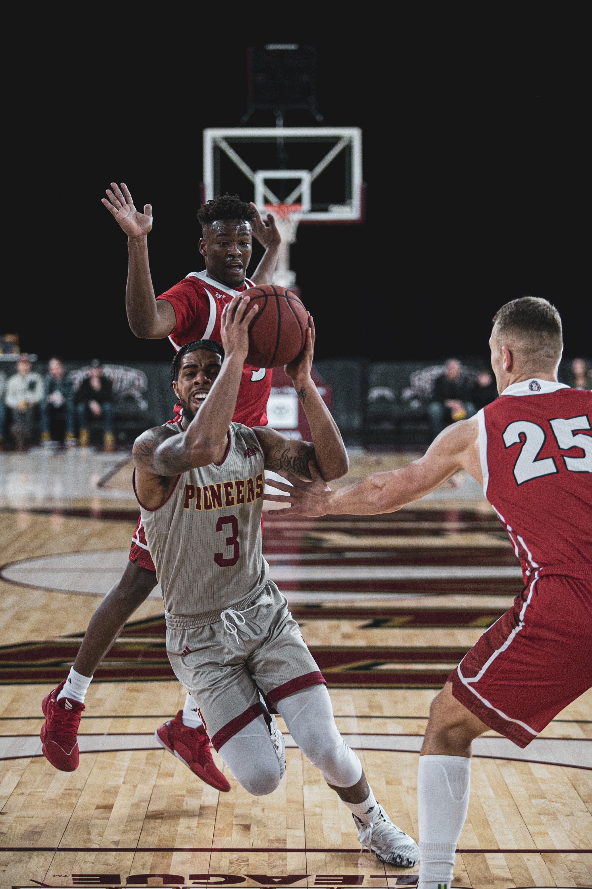
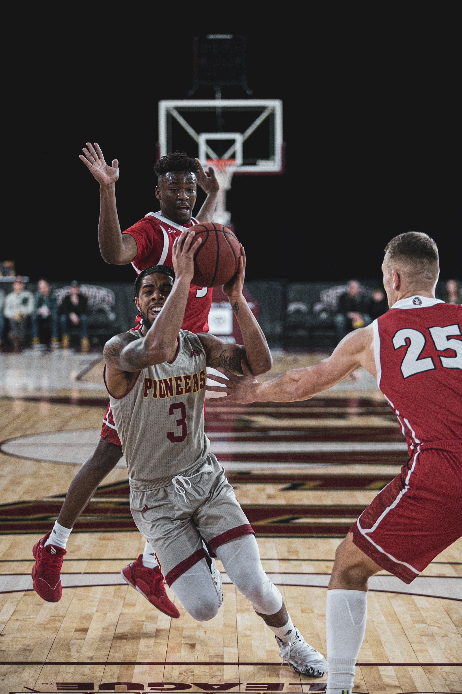

Overview
The greatest of all time, aka the GOAT, is a title that belongs to only one team per sport. The title is up for debate in every sport, but the GOAT of the NBA may be the most hotly debated of all sports greatness conversation. Lead by names like Adbul-Jabar, Jordan and Curry, these top teams certainly had the star power alone to make a case for the title. However, each of them had a something of their own that made them great. Explore the site and learn about the chemistry, coaching and talent of each of these candidates and decide for yourself who really deserves the title greatest of all time.

 
